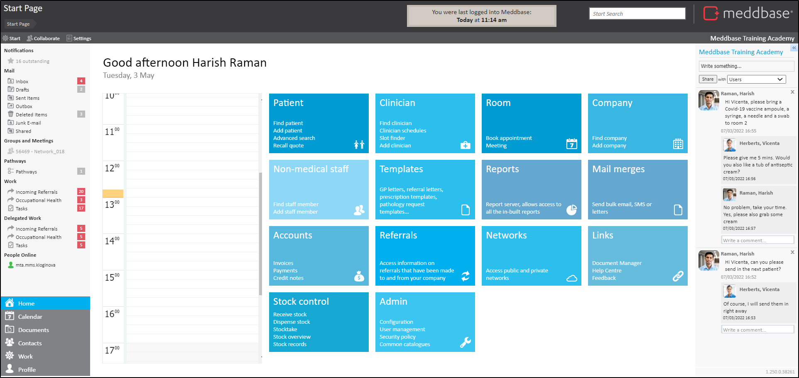
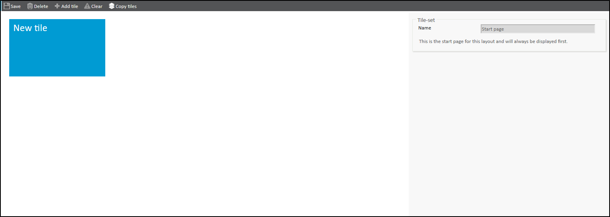
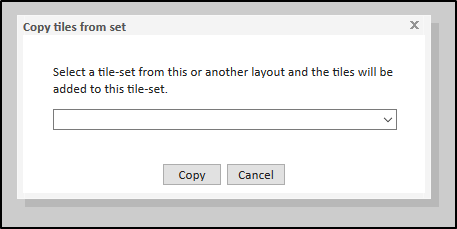
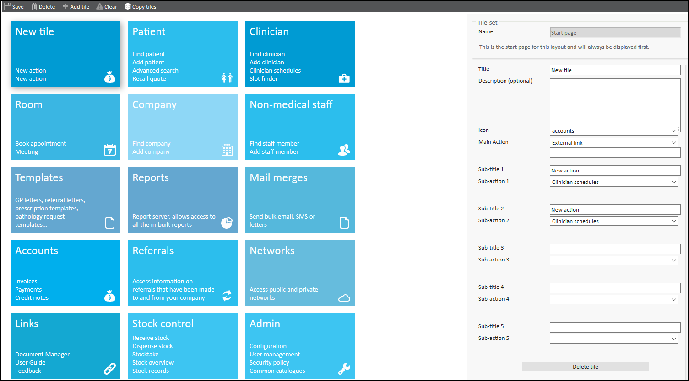
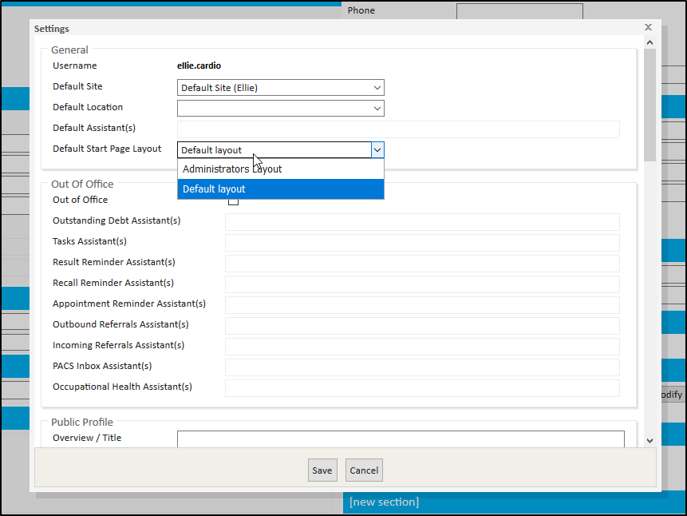

Meddbase is a highly adjustable and configurable application, able to accommodate various workflows allowing you to conduct your business in a connected and cohesive manner. You can streamline the tile options on the Meddbase Start Page removing those tiles that are not needed for groups of users or certain roles. You can also move less frequently used tile options behind other tiles to achieve a simpler home page.
This article will walk you through the process of creating custom Start Page layouts as well as steps required to select a layout for a user.
Once logged into Meddbase, you will automatically be directed to the Start Page which will look like shown on the image below.

To customise a layout:
1. From the Start Page navigate to Admin > Common Catalogues > Start Page Layouts.
Here you can either amend the current default layout or add additional layouts for different groups of users.
2. Add a new layout by clicking New start page layout.
You'll then be required to give your layout a name, once you click save the new layout will be ready to edit, you may need to refresh the page for it to appear in the left hand menu.
By default you will be given a very basic layout like the below:

If you would prefer to work from an existing layout you can do so by clicking copy tiles in the top menu and choosing the layout you would like to work from.

You can then amend the layout tile by tile. In this example I've copied the default tiles over so I can create a new layout that's similar to the default.

Once you've selected the tile you want to edit you're given a variety of options on the right hand side, including the option to delete that specific tile:
You can add up to 5 sub-actions to each tile - if you want any additional sections added it may be more appropriate to add new tile set.
Once the new layouts have been set up they can be assigned in user settings:
